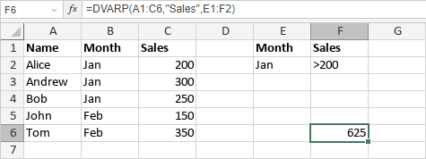

DVARP funkcija
DVARP funkcija je jedna od baza podataka funkcija. Koristi se za izračunavanje varijanse populacije zasnovane na celoj populaciji koristeći brojeve u polju (koloni) zapisa u listi ili bazi podataka koji zadovoljavaju uslove koje odredite.
Sintaksa
DVARP(database, field, criteria)
DVARP funkcija ima sledeće argumente:
| Argument | Opis |
|---|---|
| database | Opseg ćelija koji čine bazu podataka. Mora sadržati naslove kolona u prvom redu. |
| field | Argument koji određuje koje polje (tj. kolona) treba koristiti. Može biti broj željene kolone ili naslov kolone u navodnicima. |
| criteria | Opseg ćelija koji sadrže uslove. Mora sadržati bar jedno ime polja (naslov kolone) i najmanje jednu ćeliju ispod koja određuje uslov koji će se primeniti na ovo polje u bazi podataka. Opseg criteria ne sme se preklapati sa opsegom database. |
Napomene
Kako primeniti DVARP funkciju.
Primeri
Slika ispod prikazuje rezultat koji vraća DVARP funkcija.
